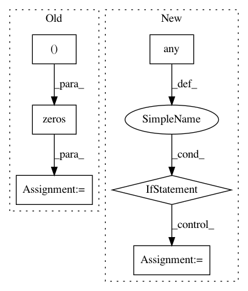

dce3b66b54fac2040e826a5a465ff58cf1295e7f,hypertools/tools/reduce.py,,reduce,#Any#Any#Any#Any#Any#Any#,13
Before Change
// pad cols with zeros if ndims returned is less than ndims
if x_reduced[0].shape[1] < ndims:
for idx, x_r in enumerate(x_reduced):
x_reduced[idx] = np.hstack([x_r, np.zeros((x_r.shape[0], ndims-x_reduced[0].shape[1]))])
if align == True:
// Import is here to avoid circular imports with reduce.py
from .align import align as aligner
After Change
assert all([i.shape[1]>ndims for i in x]), "In order to reduce the data, ndims must be less than the number of dimensions"
// if there are any nans in any of the lists, use ppca
if np.isnan(np.vstack(x)).any():
warnings.warn("Missing data: Inexact solution computed with PPCA (see https://github.com/allentran/pca-magic for details)")
x = fill_missing(x)
// normalize
if normalize:
x = normalizer(x, normalize=normalize)
// build model params dict
In pattern: SUPERPATTERN
Frequency: 3
Non-data size: 6
Instances
Project Name: ContextLab/hypertools
Commit Name: dce3b66b54fac2040e826a5a465ff58cf1295e7f
Time: 2017-06-14
Author: andrew.heusser@gmail.com
File Name: hypertools/tools/reduce.py
Class Name:
Method Name: reduce
Project Name: ContextLab/hypertools
Commit Name: 449ccc820a0558d742bc7055bc37c1690dff4496
Time: 2017-06-14
Author: andrew.heusser@gmail.com
File Name: hypertools/tools/reduce.py
Class Name:
Method Name: reduce
Project Name: nipy/dipy
Commit Name: 8fec4891a981863b6e57b8a9cba08e22ba50be51
Time: 2016-08-29
Author: rafaelnh21@gmail.com
File Name: dipy/reconst/fwdti.py
Class Name:
Method Name: nlls_fit_tensor